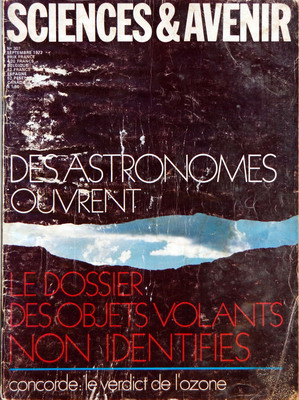
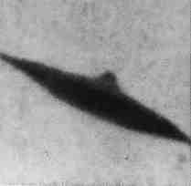
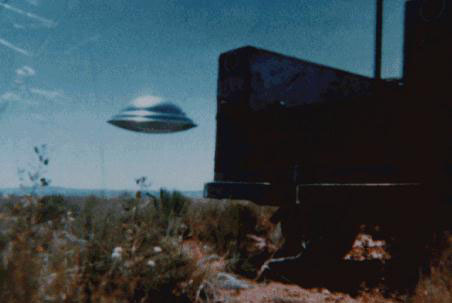

Science & Avenir n° 307 du 1er, titrant : Des astronomes ouvrent le dossier des objets volants non
identifiés

La source d'énergie de la constellation du Cygne appellée "X-3" qui émettait normalement des ondes de T. S. F.
commence à multiplier sa puissance par 200.
Fin de la mission Skylab-3.
A Imjarvi (Finlande), Aarno Heinonen conduit son scooter
sur la route de Voikoski. Il voit un petit nuage
sphérique passer au-dessus de lui, qui finit par descendre et s'arrêter à environ 8 pieds du sol. De ce "nuage" descend la même fille de l'espace,
portant cette fois un habit à pantalon brun. N'ayez pas peur, je suis votre amie d'une autre planète, lui dit-elle. La femme a des chaussures brunes
et porte des gants fins. En partant, elle sourit d'une belle manière, puis tire sur l'une des antennes sur la
petite sphère. Heinonen sent un tourbillon, et la fille glisse vers le haut dans le nuage globulaire, qui fait alors une ascension
verticale très rapidement Humcat 1972-24A Heinonen, Ufoika Nov. 1972L'ovni observé le 16

Observation (ci-contre).
Photographie le 24 au Nouveau-Mexique

Photographie (ci-contre) de Paul Villa au Nouveau-Mexique.